视频拆解报告
分镜时间轴
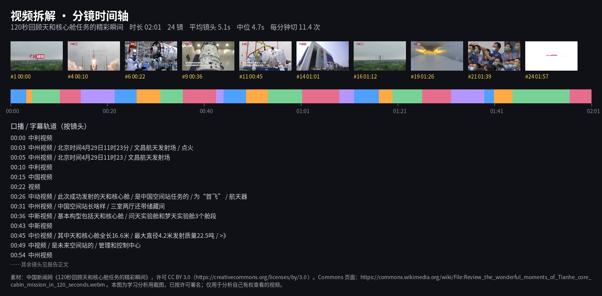
关键帧联系图（给多模态模型看）
在支持读图的环境中，用 Read 工具打开 contact_sheet.png，即可按时间码对照画面。不要在未看图时编造画面描述。
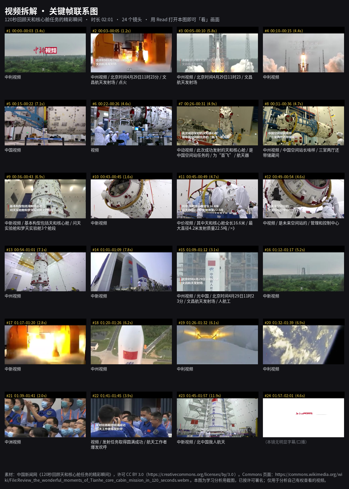
分镜表
| # | 时间 | 关键帧 | 口播/字幕 | 画面字（OCR） | 画面描述 |
|---|---|---|---|---|---|
| 1 | 00:00–00:03 3.4s | 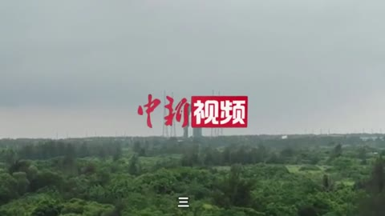 | 中利视频 | 深色背景正中叠出红色「中新视频」台标，尚未进入发射画面。OCR 只读到水印。 | |
| 2 | 00:03–00:05 1.2s | 中州视频 / 北京时间4月29日11时23分 / 文昌航天发射场 / 点火 | 火箭在发射台点火，底部喷出橙白火焰与浓烟。硬字幕写「北京时间4月29日11时23分」「文昌航天发射场」，并有「点火」。OCR 读出了时刻、地点和「点火」（水印被误读为「中州视频」）。 | ||
| 3 | 00:05–00:10 5.8s | 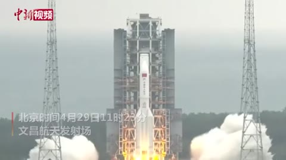 | 中州视频 / 北京时间4月29日11时23 / 文昌航天发射场 | 火箭已离开发射台，拖着烟柱升空，左下可见塔架。硬字幕仍是发射时刻与文昌发射场。OCR 再次读出时刻与地点。 | |
| 4 | 00:10–00:15 4.4s | 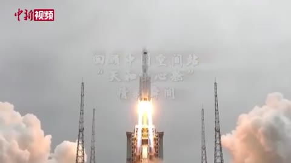 | 中利视频 | 更远的仰角：火箭在蓝天中上升，烟迹拉长。本帧说明字较弱，OCR 主要读到误识的台标。 | |
| 5 | 00:15–00:22 7.1s | 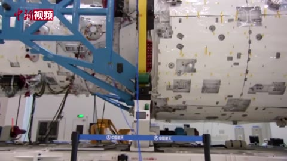 | 中国视频 | 厂房内的总装或测试现场，可见白色舱段与工作人员。 | |
| 6 | 00:22–00:26 4.6s | 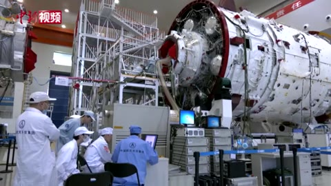 | 视频 | 洁净厂房中，穿防尘服的人员靠近大型白色舱体。 | |
| 7 | 00:26–00:31 4.9s | 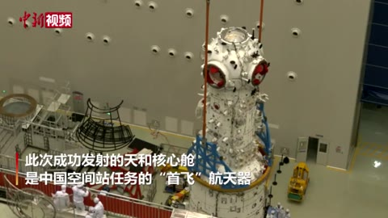 | 中动视频 / 此次成功发射的天和核心舱 / 是中国空间站任务的 / 为“首飞” / 航天器 | 车间内的核心舱段特写，叠硬字幕说明这是中国空间站任务的「首飞」航天器。OCR 读出「此次成功发射的天和核心舱 / 是中国空间站任务的 / 为“首飞” / 航天器」（措辞略碎，大意与画面说明条一致）。 | |
| 8 | 00:31–00:36 4.7s | 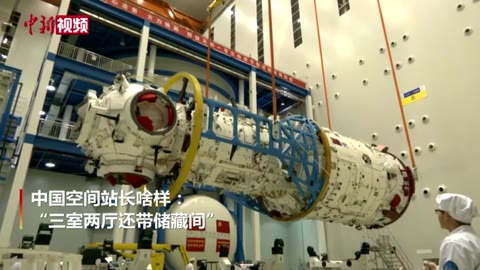 | 中州视频 / 中国空间站长啥样 / 三室两厅还带储藏间 | 白色舱段吊装或转运。硬字幕：「中国空间站长啥样 / 三室两厅还带储藏间」。OCR 读出了这句通俗说明。 | |
| 9 | 00:36–00:43 6.9s | 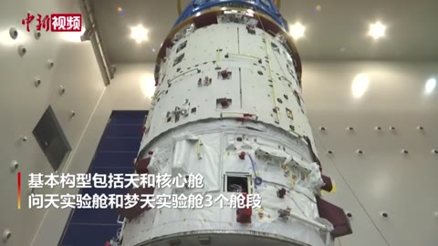 | 中新视频 / 基本构型包括天和核心舱 / 问天实验舱和梦天实验舱3个舱段 | 舱段或示意图，硬字幕：「基本构型包括天和核心舱 / 问天实验舱和梦天实验舱3个舱段」。OCR 读出了三舱名称。 | |
| 10 | 00:43–00:45 1.6s | 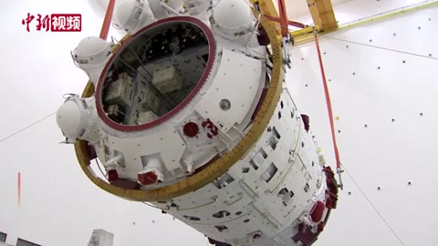 | 中新视频 | 核心舱近景，结构清晰；本帧硬字幕少，OCR 主要是水印。 | |
| 11 | 00:45–00:49 4.7s | 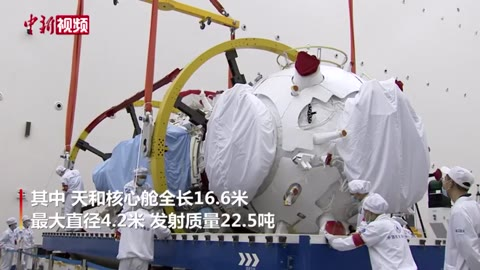 | 中价视频 / 其中天和核心舱全长16.6米 / 最大直径4.2米发射质量22.5吨 / >》 | 舱体侧面。硬字幕给出三项尺寸：「天和核心舱全长16.6米 / 最大直径4.2米 / 发射质量22.5吨」。OCR 读出了这三个关键数字。 | |
| 12 | 00:49–00:54 4.6s | 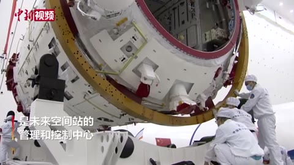 | 中视频 / 是未来空间站的 / 管理和控制中心 | 舱体另一角度。硬字幕：「是未来空间站的管理和控制中心」。OCR 正确。 | |
| 13 | 00:54–01:01 7.1s | 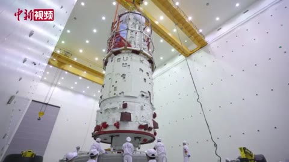 | 中州视频 | 火箭在蓝天或云层中的升空远景。 | |
| 14 | 01:01–01:09 7.8s | 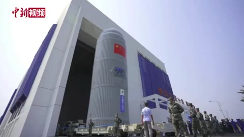 | 中新视频 | 地面仰拍火箭升空，画面一侧有旗帜。 | |
| 15 | 01:09–01:12 3.1s | 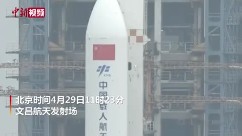 | 中州视频 / 光中国 / 北京时间4月29日11时23分 / 文昌航天发射场 / 人航工 | 火箭升空过程中再次叠出发射时刻与文昌发射场。OCR 读到时刻地点，同时夹杂「光中国」「人航工」等误字。 | |
| 16 | 01:12–01:17 5.2s | 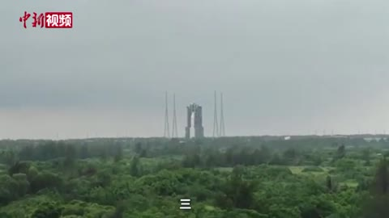 | 中新视频 | 较暗的天空里，远处可见火箭尾焰。 | |
| 17 | 01:17–01:20 2.8s | 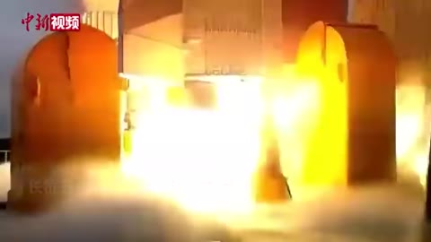 | 中新视频 | 点火或上升时的大片橙黄火焰特写。 | |
| 18 | 01:20–01:26 6.2s | 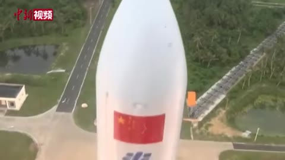 | 中州视频 | 火箭近景向上飞，箭体轮廓清晰。 | |
| 19 | 01:26–01:32 6.1s | 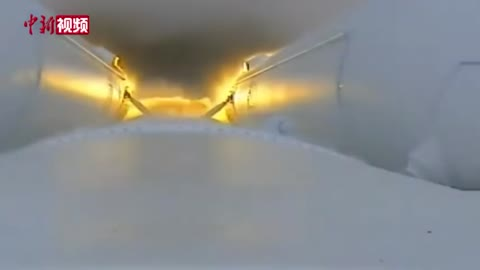 | 中利视频 | 火箭继续上升，蓝天背景。 | |
| 20 | 01:32–01:39 6.9s | 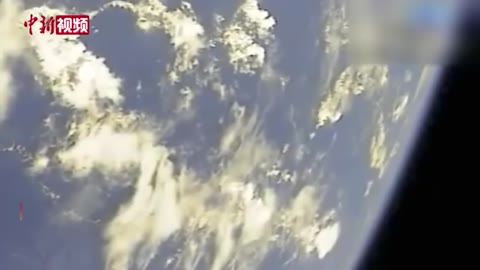 | 中利视频 | 更高处的箭体与尾焰，衬着白云。 | |
| 21 | 01:39–01:41 2.0s | 中洲视频 | 发射场看台上，一排穿蓝色工作服、戴证件的航天工作者仰头观看。 | ||
| 22 | 01:41–01:45 3.9s | 视频 / 发射任务取得圆满成功 / 航天工作者爆发欢呼 | 同一批工作者欢呼鼓掌。硬字幕：「发射任务取得圆满成功 / 航天工作者爆发欢呼」。OCR 读出了这两句。 | ||
| 23 | 01:45–01:57 11.9s | 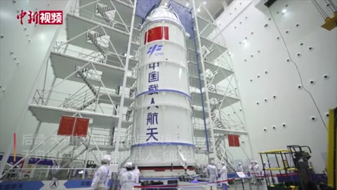 | 中新视频 / 北中国我人航天 | 空中的火箭远景。OCR 只得到「北中国我人航天」一类残字，不能当作可靠字幕。 | |
| 24 | 01:57–02:01 4.6s | 接近白场的结束画面，右下有很小的标志，OCR 为空。 |
完整口播 / 字幕
- （无）
局限与失败点
- Whisper 未转写出任何口播（可能是纯音乐/环境音，或音轨极轻）。
- 画面描述需由带图像能力的模型查看 contact_sheet.png 后填写，脚本本身不编造画面。
- ASR / OCR 会有错字，报告里的口播和画面字不能当成逐字稿使用，需对照原片或联系图抽查。
- 人工对照联系图后的补充：关键硬字幕（发射时刻与地点、三舱构型、「三室两厅还带储藏间」、16.6 米 / 4.2 米 / 22.5 吨、「发射任务取得圆满成功」）与画面一致；水印「中新视频」在多镜被读成「中利/中州/中价/中洲」。第 23 镜 OCR「北中国我人航天」是残字，未当作事实。
- 本条为展示主样例：Whisper 转写为空，但 OCR + 联系图仍能看懂快剪。素材许可为 CC BY 3.0，展示图已署名。